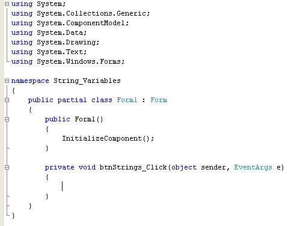
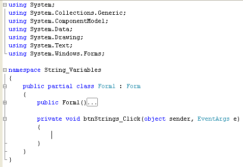
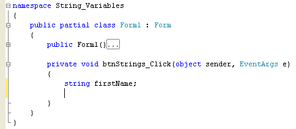
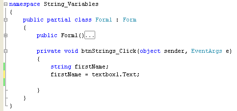
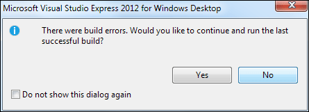
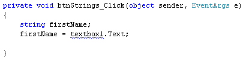
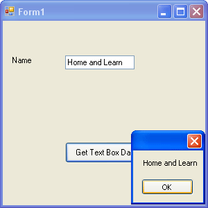
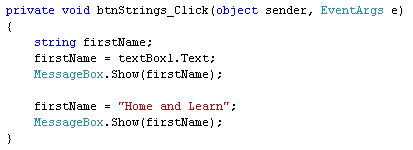

Assigning Text to a String Variable
<< Continues from previous lesson
Double click your button to open up the coding window. Your cursor will be flashing inside of the curly brackets for the button code:

Notice all the minus symbols on the left hand side. You can click these, and it will hide code for you. Click the minus symbol next to public Form1( ). It will turn into a plus symbol, and the code for just this Method will be hidden:

Hiding code like this makes the rest of the coding window easier to read. Back to the button code, though. We're going to set up a string variable. To do this, you need two things: the Type of variable you want, and a name for your variable.
Click inside the two curly brackets of the button code, and add the following:
string firstName;
After the semi-colon, press the enter key on your keyboard to start a new line. Your coding window will then look like this:

What you have done is to set up a variable called firstName. The Type of variable is a string. Note that the coding editor will turn the word "string" blue. Blue denotes the variable type - a string, in this case. (Other variable types are int, float, and double. These are all number variables that you'll meet shortly.)
After you have told C# which type of variable you want, you then need to come up with a name for your variable. This is like the sticker on an empty box. The empty box is the variable type. Think of these empty boxes as being of different sizes and different materials. A big, cardboard box is totally different from a small wooden one! But what you are really doing here is telling C# to set aside some memory, and that this storage area will hold strings of text. You give it a unique name so as to tell it apart from other items in memory. After all, would you be able to find the correct box, if they were all the same size, the same shape, the same colour, and had no stickers on them?
The name you pick for your variables, firstName in our case, can be almost anything you want - it's entirely up to you what you call them. But you should pick something that is descriptive, and gives you a clue as to what might be in your variable.
We say you can call your variables almost anything. But there are some rules, and some words that C# bags for itself. The words that C# reserves for itself are called Keywords. There are about 80 of these words, things like using, for, new, and public. If the name you have chosen for your variable turns blue in the coding window, then it's a reserved word, and you should pick something else.
Characters you can use for your Variables
The only characters that you can use in your variable names are letters, numbers, and the underscore character ( _ ). And you must start the variable name with a letter, or underscore. You'll get an error message if you start your variable names with a number. So these are OK:
firstName
first_Name
firstName2
But these are not:
1firstName (Starts with a number)
first_Name& (Ends with an illegal character)
first Name (Two words, with a space in between)
Notice that all the variable names above start with a lowercase letter. Because we're using two words joined together, the second word starts with an uppercase letter. It's recommended that you use this format for your variables (called camelCase notation.) So firstName, and not Firstname.
After setting up your variable (telling C# to set aside some memory for you), and giving it a name, the next thing to do is to store something in the variable. Add the following line to your code (don't forget the semi-colon on the end):
firstName = textbox1.Text;
Your coding window will then look like this:

To store something in a variable, the name of your variable goes on the left hand side of an equals sign. After an equals sign, you type what it is you want to store in the variable. For us, this is the Text from textbox1.
Except, there's a slight problem. Try to run your code. You should see an error message like this one:

Click No, and have a look at your code:

There is a blue wiggly line under textbox1. Hold your mouse over this and Visual Studio will tell you that:
The name 'textbox1' does not exist in the current context.
If you see an error like this, which is quite common, it means that Visual C# cannot find anything with the name you've just typed. So it thinks we don't have a textbox called textbox1. And we don't! It's called textBox1. We've typed a lowercase "b" when it should be an uppercase "B". So it's important to remember that C# is case sensitive. This variable name:
firstName
Is different to this variable name:
FirstName
The first one starts with a lowercase "f" and the second one starts with an uppercase "F".
Delete the lowercase "b" from your code and type an uppercase "B" instead. Run your programme again and you won't see the error message. Now stop your programme and return to the coding window. The blue wiggly line will have disappeared.
What have so far, then, is the following:
string firstName;
firstName = textBox1.Text;
The first line sets up the variable, and tells C# to set aside some memory that will hold a string of text. The name of this storage area will be firstName.
The second line is the one that actually stores something in the variable - the Text from a text box called textBox1.
Now that we have stored the text from the text box, we can do something with it. In our case, this will be to display it in a message box. Add this line to your code:
MessageBox.Show(firstName);
The MessageBox.Show( ) Method is one you've just used. In between the round brackets, you can either type text surrounded by double quotes, or you can type the name of a string variable. If you're typing the name of a variable, you leave the double quotes off. You can do this because C# knows what is in your variable (you have just told it on the second line of your code.)
Run your programme again. Type something in your text box, and then click the button. You should see the text you typed:

Halt your programme and return to the coding window.
Assigning text to a String Variable
As well as assigning text from a text box to your variable, you can assign text like this:
firstName = "Home and Learn";
On the right hand side of the equals sign, we now have some direct text surrounded by double quotes. This then gets stored into the variable on the left hand side of the equals sign. To try this out, add the following two lines just below your MesageBox line:
firstName = "Home and Learn";
MessageBox.Show(firstName);
Your coding window will then look like this:

Run your programme again. Type something in the text box, your own first name. Then click the button. You should see two message boxes, one after the other. The first one will display your first name. But the second will display "Home and Learn".
We're using the same variable name, here: firstName. The first time we used it, we got the text directly from the text box. We then displayed it in the Message Box. With the two new lines, we're typing some text directly in the code, "Home and Learn", and then assigning that text to the firstName variable. We've then added a second MessageBox.Show( ) method to display whatever is in the variable.
In the next part of this lesson, you'll learn about something called Concatenation.